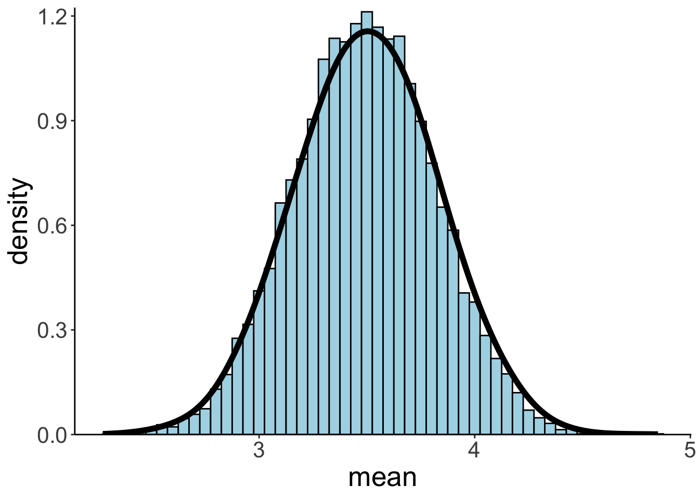
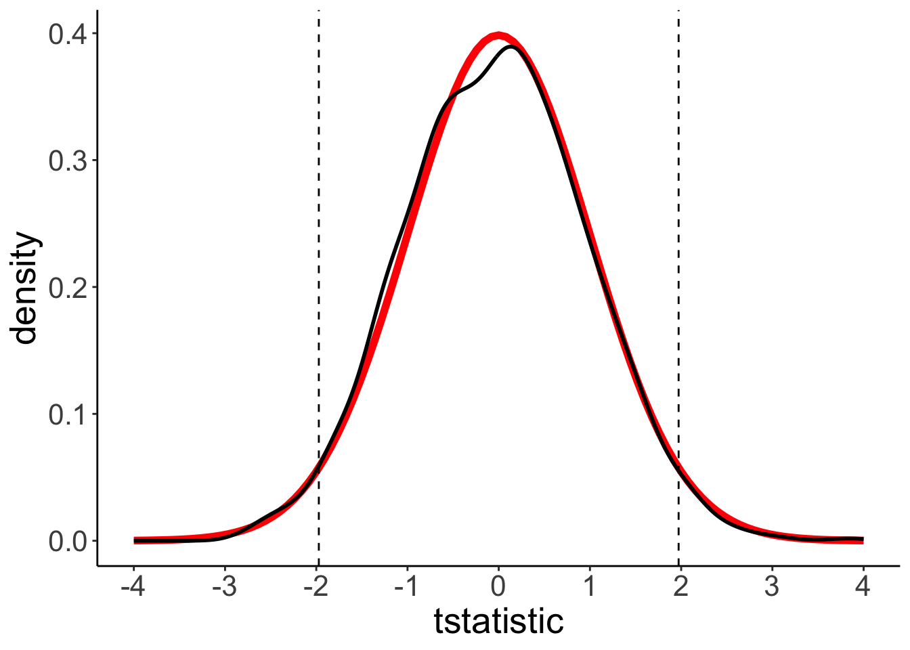

Chapter 8 Simulation 2
In which we figure out some key statistical concepts through simulation and plotting. On the menu we have:
- Sampling distributions
- p-value
- Confidence interval
- Bootstrapping
8.1 Load packages and set plotting theme
8.2 Making statistical inferences (frequentist style)
8.2.1 Population distribution
Let’s first put the information we need for our population distribution in a data frame.
# the distribution from which we want to sample (aka the heavy metal distribution)
df.population = tibble(numbers = 1:6,
probability = c(1/3, 0, 1/6, 1/6, 0, 1/3))And then let’s plot it:
# plot the distribution
ggplot(data = df.population,
mapping = aes(x = numbers,
y = probability)) +
geom_bar(stat = "identity",
fill = "lightblue",
color = "black") +
scale_x_continuous(breaks = df.population$numbers,
labels = df.population$numbers,
limits = c(0.1, 6.9)) +
coord_cartesian(expand = F)
Here are the true mean and standard deviation of our population distribution:
# mean and standard deviation (see: https://nzmaths.co.nz/category/glossary/standard-deviation-discrete-random-variable)
df.population %>%
summarize(population_mean = sum(numbers * probability),
population_sd = sqrt(sum(numbers^2 * probability) - population_mean^2)) %>%
kable(digits = 2) %>%
kable_styling(bootstrap_options = "striped",
full_width = F)| population_mean | population_sd |
|---|---|
| 3.5 | 2.06 |
8.2.2 Distribution of a single sample
Let’s draw a single sample of size \(n = 40\) from the population distribution and plot it:
# make example reproducible
set.seed(1)
# set the sample size
sample_size = 40
# create data frame
df.sample = sample(df.population$numbers,
size = sample_size,
replace = T,
prob = df.population$probability) %>%
enframe(name = "draw", value = "number")
# draw a plot of the sample
ggplot(data = df.sample,
mapping = aes(x = number, y = stat(density))) +
geom_histogram(binwidth = 0.5,
fill = "lightblue",
color = "black") +
scale_x_continuous(breaks = min(df.sample$number):max(df.sample$number)) +
scale_y_continuous(expand = expansion(mult = c(0, 0.01)))Warning: `stat(density)` was deprecated in ggplot2 3.4.0.
ℹ Please use `after_stat(density)` instead.
This warning is displayed once every 8 hours.
Call `lifecycle::last_lifecycle_warnings()` to see where this warning was generated.
Here are the sample mean and standard deviation:
# print out sample mean and standard deviation
df.sample %>%
summarize(sample_mean = mean(number),
sample_sd = sd(number)) %>%
kable(digits = 2) %>%
kable_styling(bootstrap_options = "striped",
full_width = F)| sample_mean | sample_sd |
|---|---|
| 3.72 | 2.05 |
8.2.3 The sampling distribution
And let’s now create the sampling distribution (making the unrealistic assumption that we know the population distribution).
# make example reproducible
set.seed(1)
# parameters
sample_size = 40 # size of each sample
sample_n = 10000 # number of samples
# define a function that draws samples from a discrete distribution
fun.draw_sample = function(sample_size, distribution){
x = sample(distribution$numbers,
size = sample_size,
replace = T,
prob = distribution$probability)
return(x)
}
# generate many samples
samples = replicate(n = sample_n,
fun.draw_sample(sample_size, df.population))
# set up a data frame with samples
df.sampling_distribution = matrix(samples, ncol = sample_n) %>%
as_tibble(.name_repair = ~ str_c(1:sample_n)) %>%
pivot_longer(cols = everything(),
names_to = "sample",
values_to = "number") %>%
mutate(sample = as.numeric(sample)) %>%
group_by(sample) %>%
mutate(draw = 1:n()) %>%
select(sample, draw, number) %>%
ungroup()
# turn the data frame into long format and calculate the means of each sample
df.sampling_distribution_means = df.sampling_distribution %>%
group_by(sample) %>%
summarize(mean = mean(number)) %>%
ungroup()And plot it:
set.seed(1)
# plot a histogram of the means with density overlaid
df.plot = df.sampling_distribution_means
ggplot(data = df.plot,
mapping = aes(x = mean)) +
geom_histogram(aes(y = stat(density)),
binwidth = 0.05,
fill = "lightblue",
color = "black") +
stat_density(bw = 0.1,
linewidth = 2,
geom = "line") +
scale_y_continuous(expand = expansion(mult = c(0, 0.01)))
Even though our population distribution was far from normal (and much more heavy-metal like), the means of the sampling distribution are normally distributed.
And here are the mean and standard deviation of the sampling distribution:
# print out sampling distribution mean and standard deviation
df.sampling_distribution_means %>%
summarize(sampling_distribution_mean = mean(mean),
sampling_distribution_sd = sd(mean)) %>%
kable(digits = 2) %>%
kable_styling(bootstrap_options = "striped",
full_width = F)| sampling_distribution_mean | sampling_distribution_sd |
|---|---|
| 3.5 | 0.33 |
Here is a data frame that I’ve used for illustrating the idea behind how a sampling distribution is constructed from the population distribution.
# data frame for illustration in class
df.sampling_distribution %>%
filter(sample <= 10, draw <= 4) %>%
pivot_wider(names_from = draw,
values_from = number) %>%
set_names(c("sample", str_c("draw_", 1:(ncol(.) - 1)))) %>%
mutate(sample_mean = rowMeans(.[, -1])) %>%
head(10) %>%
kable(digits = 2) %>%
kable_styling(bootstrap_options = "striped",
full_width = F)| sample | draw_1 | draw_2 | draw_3 | draw_4 | sample_mean |
|---|---|---|---|---|---|
| 1 | 1 | 6 | 6 | 4 | 4.25 |
| 2 | 3 | 6 | 3 | 6 | 4.50 |
| 3 | 6 | 3 | 6 | 1 | 4.00 |
| 4 | 4 | 6 | 6 | 1 | 4.25 |
| 5 | 1 | 4 | 6 | 3 | 3.50 |
| 6 | 1 | 1 | 6 | 1 | 2.25 |
| 7 | 1 | 6 | 4 | 1 | 3.00 |
| 8 | 1 | 6 | 4 | 6 | 4.25 |
| 9 | 6 | 1 | 6 | 4 | 4.25 |
| 10 | 1 | 1 | 4 | 1 | 1.75 |
8.2.3.1 Bootstrapping a sampling distribution
Of course, in actuality, we never have access to the population distribution. We try to infer characteristics of that distribution (e.g. its mean) from our sample. So using the population distribution to create a sampling distribution is sort of cheating – helpful cheating though since it gives us a sense for the relationship between population, sample, and sampling distribution.
It urns out that we can approximate the sampling distribution only using our actual sample. The idea is to take the sample that we drew, and generate new samples from it by drawing with replacement. Essentially, we are treating our original sample like the population from which we are generating random samples to derive the sampling distribution.
# make example reproducible
set.seed(1)
# how many bootstrapped samples shall we draw?
n_samples = 1000
# generate a new sample from the original one by sampling with replacement
func.bootstrap = function(df){
df %>%
sample_frac(size = 1, replace = T) %>%
summarize(mean = mean(number)) %>%
pull(mean)
}
# data frame with bootstrapped results
df.bootstrap = tibble(bootstrap = 1:n_samples,
average = replicate(n = n_samples, func.bootstrap(df.sample)))Let’s plot our sample first:
# plot the distribution
ggplot(data = df.sample,
mapping = aes(x = number)) +
geom_bar(stat = "count",
fill = "lightblue",
color = "black") +
scale_x_continuous(breaks = 1:6,
labels = 1:6,
limits = c(0.1, 6.9)) +
coord_cartesian(expand = F)
Let’s plot the bootstrapped sampling distribution:
# plot the bootstrapped sampling distribution
ggplot(data = df.bootstrap,
mapping = aes(x = average)) +
geom_histogram(aes(y = stat(density)),
color = "black",
fill = "lightblue",
binwidth = 0.05) +
# stat_density(geom = "line",
# size = 1.5,
# bw = 0.1,
# color = "blue",
# linetype = 2) +
stat_function(fun = ~ dnorm(.,
mean = mean(df.sample$number),
sd = sd(df.sample$number / sqrt(nrow(df.sample)))),
size = 2) +
labs(x = "mean") +
scale_y_continuous(expand = expansion(mult = c(0, 0.01)))Warning: Using `size` aesthetic for lines was deprecated in ggplot2 3.4.0.
ℹ Please use `linewidth` instead.
This warning is displayed once every 8 hours.
Call `lifecycle::last_lifecycle_warnings()` to see where this warning was generated.
And let’s calculate the mean and standard deviation:
# print out sampling distribution mean and standard deviation
df.bootstrap %>%
summarize(bootstrapped_distribution_mean = mean(average),
bootstrapped_distribution_sd = sd(average)) %>%
kable(digits = 2) %>%
kable_styling(bootstrap_options = "striped",
full_width = F)| bootstrapped_distribution_mean | bootstrapped_distribution_sd |
|---|---|
| 3.74 | 0.33 |
Neat, as we can see, the mean and standard deviation of the bootstrapped sampling distribution are very close to the sampling distribution that we generated from the population distribution.
8.3 Understanding p-values
The p-value is the probability of finding the observed, or more extreme, results when the null hypothesis (\(H_0\)) is true.
\[ \text{p-value = p(observed or more extreme test statistic} | H_{0}=\text{true}) \] What we are really interested in is the probability of a hypothesis given the data. However, frequentist statistics doesn’t give us this probability – we’ll get to Bayesian statistics later in the course.
Instead, we define a null hypothesis, construct a sampling distribution that tells us what we would expect the test statistic of interest to look like if the null hypothesis were true. We reject the null hypothesis in case our observed result would be unlikely if the null hypothesis were true.
An intutive way for illustrating (this rather unintuitive procedure) is the permutation test.
8.3.1 Permutation test
Let’s start by generating some random data from two different normal distributions (simulating a possible experiment).
# make example reproducible
set.seed(1)
# generate data from two conditions
df.permutation = tibble(control = rnorm(25, mean = 5.5, sd = 2),
experimental = rnorm(25, mean = 4.5, sd = 1.5)) %>%
pivot_longer(cols = everything(),
names_to = "condition",
values_to = "performance")Here is a summary of how each group performed:
df.permutation %>%
group_by(condition) %>%
summarize(mean = mean(performance),
sd = sd(performance)) %>%
pivot_longer(cols = - condition,
names_to = "statistic",
values_to = "value") %>%
pivot_wider(names_from = condition,
values_from = value) %>%
kable(digits = 2) %>%
kable_styling(bootstrap_options = "striped",
full_width = F)| statistic | control | experimental |
|---|---|---|
| mean | 5.84 | 4.55 |
| sd | 1.90 | 1.06 |
Let’s plot the results:
ggplot(data = df.permutation,
mapping = aes(x = condition, y = performance)) +
geom_point(position = position_jitter(height = 0, width = 0.1),
alpha = 0.5) +
stat_summary(fun.data = mean_cl_boot,
geom = "linerange",
size = 1) +
stat_summary(fun = "mean",
geom = "point",
shape = 21,
color = "black",
fill = "white",
size = 4) +
scale_y_continuous(breaks = 0:10,
labels = 0:10,
limits = c(0, 10))
We are interested in the difference in the mean performance between the two groups:
# calculate the difference between conditions
difference_actual = df.permutation %>%
group_by(condition) %>%
summarize(mean = mean(performance)) %>%
pull(mean) %>%
diff()The difference in the mean rating between the control and experimental condition is -1.2889834. Is this difference between conditions statistically significant? What we are asking is: what are the chances that a result like this (or more extreme) could have come about due to chance?
Let’s answer the question using simulation. Here is the main idea: imagine that we were very sloppy in how we recorded the data, and now we don’t remember anymore which participants were in the controld condition and which ones were in experimental condition (we still remember though, that we tested 25 participants in each condition).
set.seed(0)
df.permutation = df.permutation %>%
mutate(permutation = sample(condition)) #randomly assign labels
df.permutation %>%
group_by(permutation) %>%
summarize(mean = mean(performance),
sd = sd(performance)) %>%
ungroup() %>%
summarize(diff = diff(mean))# A tibble: 1 × 1
diff
<dbl>
1 -0.0105Here, the difference between the two conditions is 0.0105496.
After randomly shuffling the condition labels, this is how the results would look like:
ggplot(data = df.permutation,
mapping = aes(x = permutation, y = performance))+
geom_point(mapping = aes(color = condition),
position = position_jitter(height = 0,
width = 0.1)) +
stat_summary(fun.data = mean_cl_boot,
geom = "linerange",
size = 1) +
stat_summary(fun = "mean",
geom = "point",
shape = 21,
color = "black",
fill = "white",
size = 4) +
scale_y_continuous(breaks = 0:10,
labels = 0:10,
limits = c(0, 10))
The idea is now that, similar to bootstrapping above, we can get a sampling distribution of the difference in the means between the two conditions (assuming that the null hypothesis were true), by randomly shuffling the labels and calculating the difference in means (and doing this many times). What we get is a distribution of the differences we would expect, if there was no effect of condition.
set.seed(1)
n_permutations = 500
# permutation function
fun.permutations = function(df){
df %>%
mutate(condition = sample(condition)) %>% #we randomly shuffle the condition labels
group_by(condition) %>%
summarize(mean = mean(performance)) %>%
pull(mean) %>%
diff()
}
# data frame with permutation results
df.permutations = tibble(permutation = 1:n_permutations,
mean_difference = replicate(n = n_permutations, fun.permutations(df.permutation)))
#plot the distribution of the differences
ggplot(data = df.permutations, aes(x = mean_difference)) +
geom_histogram(aes(y = stat(density)),
color = "black",
fill = "lightblue",
binwidth = 0.05) +
stat_density(geom = "line",
size = 1.5,
bw = 0.2) +
geom_vline(xintercept = difference_actual, color = "red", size = 2) +
labs(x = "difference between means") +
scale_x_continuous(breaks = seq(-1.5, 1.5, 0.5),
labels = seq(-1.5, 1.5, 0.5),
limits = c(-2, 2)) +
coord_cartesian(expand = F, clip = "off")Warning: Removed 2 rows containing missing values or values outside the scale
range (`geom_bar()`).And we can then simply calculate the p-value by using some basic data wrangling (i.e. finding the proportion of differences that were as or more extreme than the one we observed).
#calculate p-value of our observed result
df.permutations %>%
summarize(p_value = sum(mean_difference <= difference_actual)/n())# A tibble: 1 × 1
p_value
<dbl>
1 0.0028.3.2 t-test by hand
Examining the t-distribution.
set.seed(1)
n_simulations = 1000
sample_size = 100
mean = 5
sd = 2
fun.normal_sample_mean = function(sample_size, mean, sd){
rnorm(n = sample_size, mean = mean, sd = sd) %>%
mean()
}
df.ttest = tibble(simulation = 1:n_simulations) %>%
mutate(sample1 = replicate(n = n_simulations,
expr = fun.normal_sample_mean(sample_size, mean, sd)),
sample2 = replicate(n = n_simulations,
expr = fun.normal_sample_mean(sample_size, mean, sd))) %>%
mutate(difference = sample1 - sample2,
# assuming the same standard deviation in each sample
tstatistic = difference / sqrt(sd^2 * (1/sample_size + 1/sample_size)))
df.ttest# A tibble: 1,000 × 5
simulation sample1 sample2 difference tstatistic
<int> <dbl> <dbl> <dbl> <dbl>
1 1 5.22 4.99 0.225 0.796
2 2 4.92 5.06 -0.132 -0.467
3 3 5.06 5.40 -0.340 -1.20
4 4 5.10 4.97 0.132 0.468
5 5 4.92 4.75 0.173 0.613
6 6 4.91 4.99 -0.0787 -0.278
7 7 4.60 5.11 -0.513 -1.82
8 8 5.00 5.01 -0.0113 -0.0401
9 9 5.02 5.10 -0.0773 -0.273
10 10 5.01 4.98 0.0267 0.0945
# ℹ 990 more rowsPopulation distribution
mean = 0
sd = 1
ggplot(data = tibble(x = c(mean - 3 * sd, mean + 3 * sd)),
mapping = aes(x = x)) +
stat_function(fun = ~ dnorm(.,mean = mean, sd = sd),
color = "black",
size = 2) +
geom_vline(xintercept = qnorm(c(0.025, 0.975), mean = mean, sd = sd),
linetype = 2)
# labs(x = "performance")
Distribution of differences in means
ggplot(data = df.ttest,
mapping = aes(x = difference)) +
geom_density(size = 1) +
geom_vline(xintercept = quantile(df.ttest$difference,
probs = c(0.025, 0.975)),
linetype = 2) t-distribution
ggplot(data = df.ttest,
mapping = aes(x = tstatistic)) +
stat_function(fun = ~ dt(., df = sample_size * 2 - 2),
color = "red",
size = 2) +
geom_density(size = 1) +
geom_vline(xintercept = qt(c(0.025, 0.975), df = sample_size * 2 - 2),
linetype = 2) +
scale_x_continuous(limits = c(-4, 4),
breaks = seq(-4, 4, 1))
8.4 Confidence intervals
The definition of the confidence interval is the following:
“If we were to repeat the experiment over and over, then 95% of the time the confidence intervals contain the true mean.”
If we assume normally distributed data (and a large enough sample size), then we can calculate the confidence interval on the estimate of the mean in the following way: \(\overline X \pm Z \frac{s}{\sqrt{n}}\), where \(Z\) equals the value of the standard normal distribution for the desired level of confidence.
For smaller sample sizes, we can use the \(t\)-distribution instead with \(n-1\) degrees of freedom. For larger \(n\) the \(t\)-distribution closely approximates the normal distribution.
So let’s run a a simulation to check whether the definition of the confidence interval seems right. We will use our heavy metal distribution from above, take samples from the distribution, calculate the mean and confidence interval, and check how often the true mean of the population (\(M = 3.5\)) is contained within the confidence interval.
# make example reproducible
set.seed(1)
# parameters
sample_size = 25 # size of each sample
sample_n = 20 # number of samples
confidence_level = 0.95 # desired level of confidence
# define a function that draws samples and calculates means and CIs
fun.confidence = function(sample_size, distribution){
df = tibble(values = sample(distribution$numbers,
size = sample_size,
replace = T,
prob = distribution$probability)) %>%
summarize(mean = mean(values),
sd = sd(values),
n = n(),
# confidence interval assuming a normal distribution
# error = qnorm(1 - (1 - confidence_level)/2) * sd / sqrt(n),
# assuming a t-distribution (more conservative, appropriate for smaller
# sample sizes)
error = qt(1 - (1 - confidence_level)/2, df = n - 1) * sd / sqrt(n),
conf_low = mean - error,
conf_high = mean + error)
return(df)
}
# build data frame of confidence intervals
df.confidence = tibble()
for(i in 1:sample_n){
df.tmp = fun.confidence(sample_size, df.population)
df.confidence = df.confidence %>%
bind_rows(df.tmp)
}
# code which CIs contain the true value, and which ones don't
population_mean = 3.5
df.confidence = df.confidence %>%
mutate(sample = 1:n(),
conf_index = ifelse(conf_low > population_mean | conf_high < population_mean,
'outside',
'inside'))
# plot the result
ggplot(data = df.confidence, aes(x = sample,
y = mean,
color = conf_index)) +
geom_hline(yintercept = 3.5,
color = "red") +
geom_point() +
geom_linerange(aes(ymin = conf_low,
ymax = conf_high)) +
coord_flip() +
scale_color_manual(values = c("black", "red"),
labels = c("inside", "outside")) +
theme(axis.text.y = element_text(size = 12),
legend.position = "none")
So, out of the 20 samples that we drew the 95% confidence interval of 1 sample did not contain the true mean. That makes sense!
Feel free to play around with the code above. For example, change the sample size, the number of samples, the confidence level.
8.4.1 mean_cl_boot() explained
set.seed(1)
n = 10 # sample size per group
k = 3 # number of groups
df.data = tibble(participant = 1:(n*k),
condition = as.factor(rep(1:k, each = n)),
rating = rnorm(n*k, mean = 7, sd = 1))
p = ggplot(data = df.data,
mapping = aes(x = condition,
y = rating)) +
geom_point(alpha = 0.1,
position = position_jitter(width = 0.1, height = 0)) +
stat_summary(fun.data = "mean_cl_boot",
shape = 21,
size = 1,
fill = "lightblue")
print(p)
Peeking behind the scenes
build = ggplot_build(p)
build$data[[2]] %>%
kable(digits = 2) %>%
kable_styling(bootstrap_options = "striped",
full_width = F)| x | group | y | ymin | ymax | PANEL | flipped_aes | colour | size | linewidth | linetype | shape | fill | alpha | stroke |
|---|---|---|---|---|---|---|---|---|---|---|---|---|---|---|
| 1 | 1 | 7.13 | 6.69 | 7.62 | 1 | FALSE | black | 1 | 0.5 | 1 | 21 | lightblue | NA | 1 |
| 2 | 2 | 7.25 | 6.56 | 7.82 | 1 | FALSE | black | 1 | 0.5 | 1 | 21 | lightblue | NA | 1 |
| 3 | 3 | 6.87 | 6.28 | 7.41 | 1 | FALSE | black | 1 | 0.5 | 1 | 21 | lightblue | NA | 1 |
Let’s focus on condition 1
set.seed(1)
df.condition1 = df.data %>%
filter(condition == 1)
fun.sample_with_replacement = function(df){
df %>%
slice_sample(n = nrow(df),
replace = T) %>%
summarize(mean = mean(rating)) %>%
pull(mean)
}
bootstraps = replicate(n = 100, fun.sample_with_replacement(df.condition1))
quantile(bootstraps, prob = c(0.025, 0.975)) 2.5% 97.5%
6.671962 7.583905 8.6 Session info
Information about this R session including which version of R was used, and what packages were loaded.
R version 4.4.2 (2024-10-31)
Platform: aarch64-apple-darwin20
Running under: macOS Sequoia 15.2
Matrix products: default
BLAS: /Library/Frameworks/R.framework/Versions/4.4-arm64/Resources/lib/libRblas.0.dylib
LAPACK: /Library/Frameworks/R.framework/Versions/4.4-arm64/Resources/lib/libRlapack.dylib; LAPACK version 3.12.0
locale:
[1] en_US.UTF-8/en_US.UTF-8/en_US.UTF-8/C/en_US.UTF-8/en_US.UTF-8
time zone: America/Los_Angeles
tzcode source: internal
attached base packages:
[1] stats graphics grDevices utils datasets methods base
other attached packages:
[1] lubridate_1.9.3 forcats_1.0.0 stringr_1.5.1 dplyr_1.1.4
[5] purrr_1.0.2 readr_2.1.5 tidyr_1.3.1 tibble_3.2.1
[9] ggplot2_3.5.1 tidyverse_2.0.0 janitor_2.2.1 kableExtra_1.4.0
[13] knitr_1.49
loaded via a namespace (and not attached):
[1] gtable_0.3.5 xfun_0.49 bslib_0.7.0 htmlwidgets_1.6.4
[5] tzdb_0.4.0 vctrs_0.6.5 tools_4.4.2 generics_0.1.3
[9] fansi_1.0.6 cluster_2.1.6 pkgconfig_2.0.3 data.table_1.15.4
[13] checkmate_2.3.1 lifecycle_1.0.4 compiler_4.4.2 farver_2.1.2
[17] munsell_0.5.1 snakecase_0.11.1 htmltools_0.5.8.1 sass_0.4.9
[21] yaml_2.3.10 htmlTable_2.4.2 Formula_1.2-5 pillar_1.9.0
[25] crayon_1.5.3 jquerylib_0.1.4 cachem_1.1.0 Hmisc_5.2-1
[29] rpart_4.1.23 tidyselect_1.2.1 digest_0.6.36 stringi_1.8.4
[33] bookdown_0.42 labeling_0.4.3 fastmap_1.2.0 grid_4.4.2
[37] colorspace_2.1-0 cli_3.6.3 magrittr_2.0.3 base64enc_0.1-3
[41] utf8_1.2.4 foreign_0.8-87 withr_3.0.2 scales_1.3.0
[45] backports_1.5.0 timechange_0.3.0 rmarkdown_2.29 nnet_7.3-19
[49] gridExtra_2.3 hms_1.1.3 evaluate_0.24.0 viridisLite_0.4.2
[53] rlang_1.1.4 glue_1.8.0 xml2_1.3.6 svglite_2.1.3
[57] rstudioapi_0.16.0 jsonlite_1.8.8 R6_2.5.1 systemfonts_1.1.0